Полноценный веб-сайт пиццерии с системой аутентификации, интерактивным меню и продвинутой защитой от атак. Реализован в рамках изучения фреймворка Django 5.2 и безопасной веб-разработки. Проект является фанатской работой, вдохновленной вселенной Five Nights at Freddy's, но полностью использует оригинальный код и не нарушает авторских прав. На сайте присутствуют интерактивные элементы и загадки.
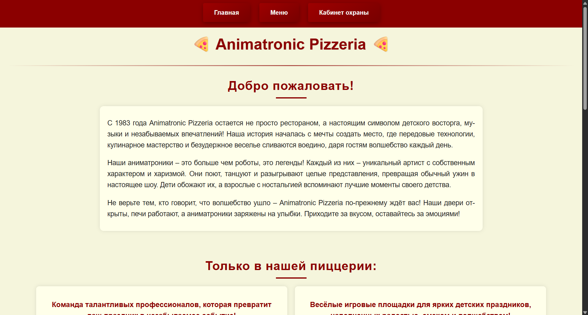
🏠 Главная страница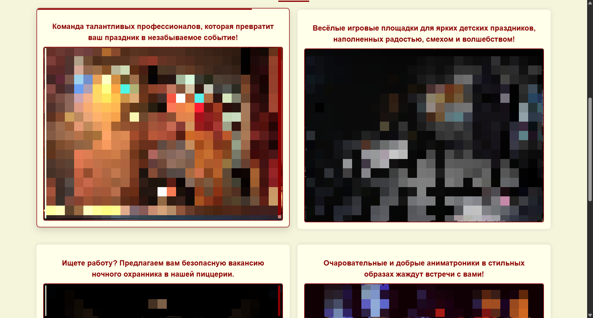
🏠 Главная страница (скролл)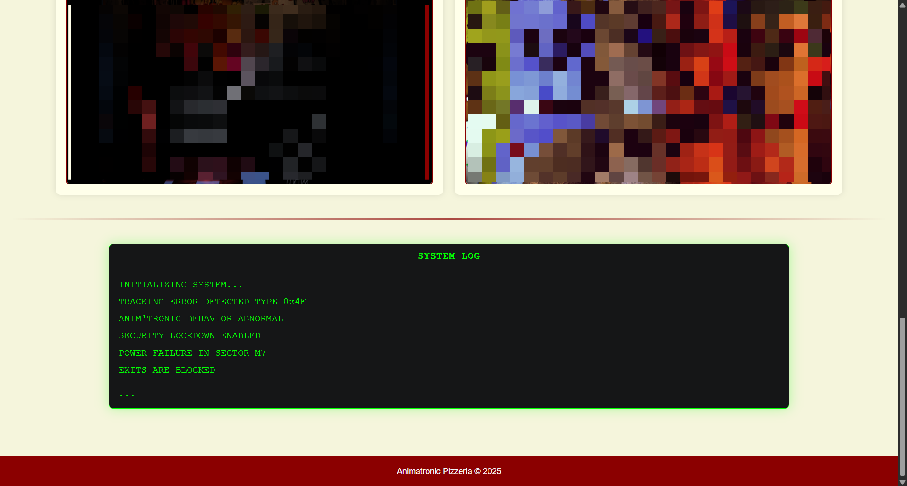
🏠 Терминал на главной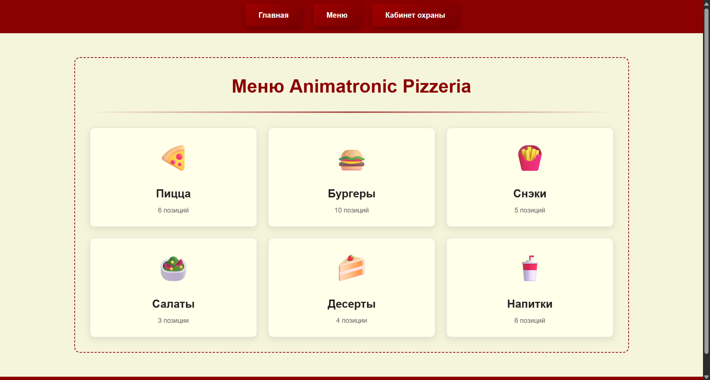
🍔 Меню с категориями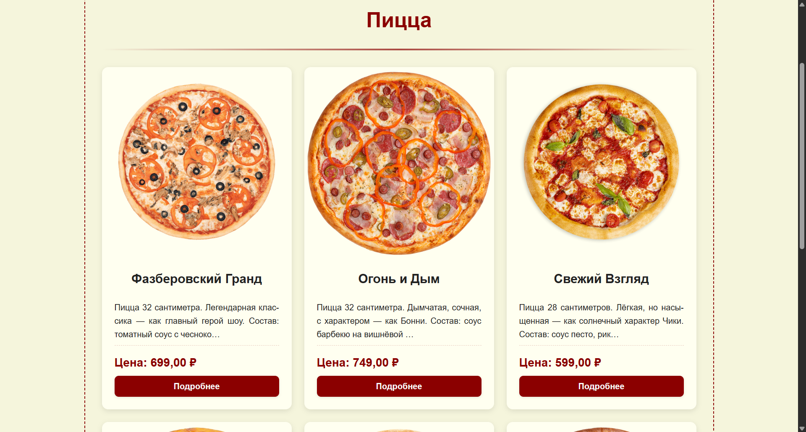
🍕 Конкретное меню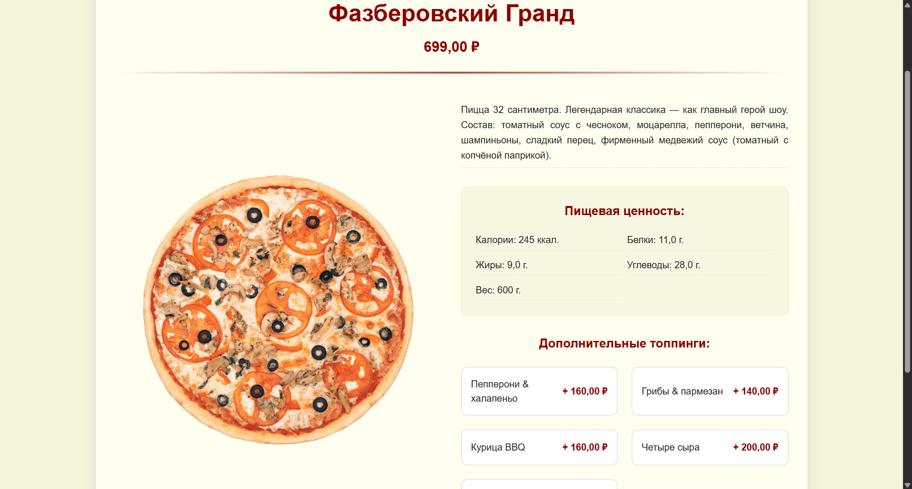
🍟 Детальная карточка блюда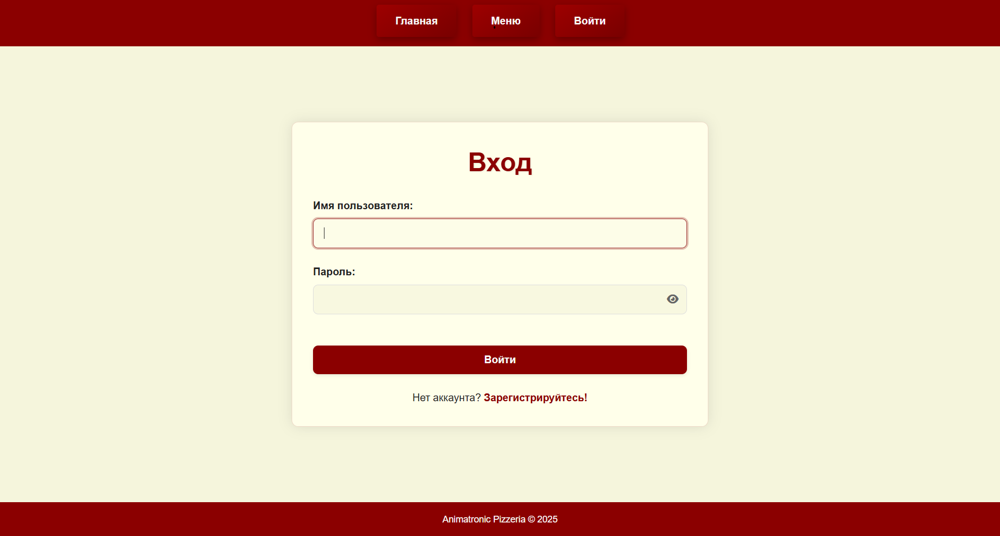
🔐 Форма входа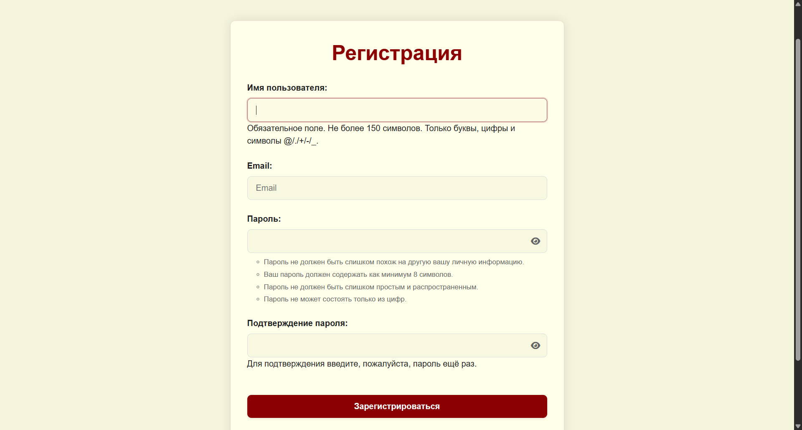
📝 Регистрация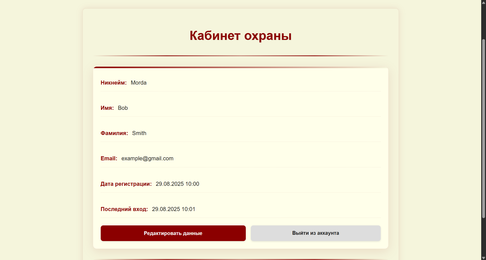
👤 Личный кабинет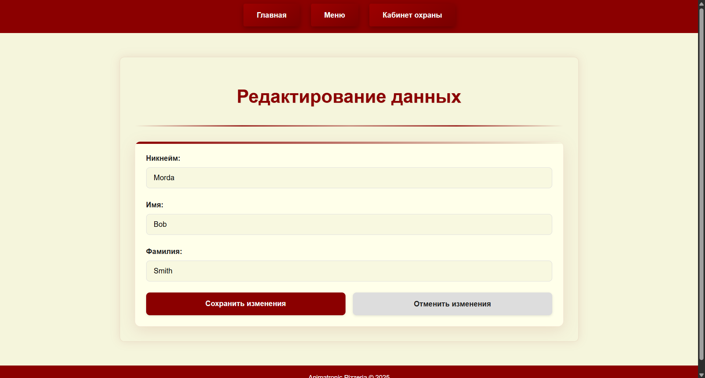
✏️ Редактирование профиля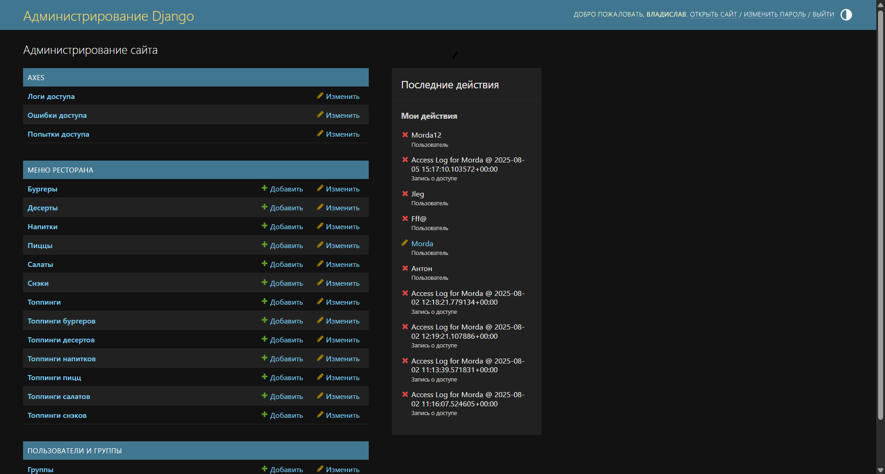
⚙️ Админ-панель Django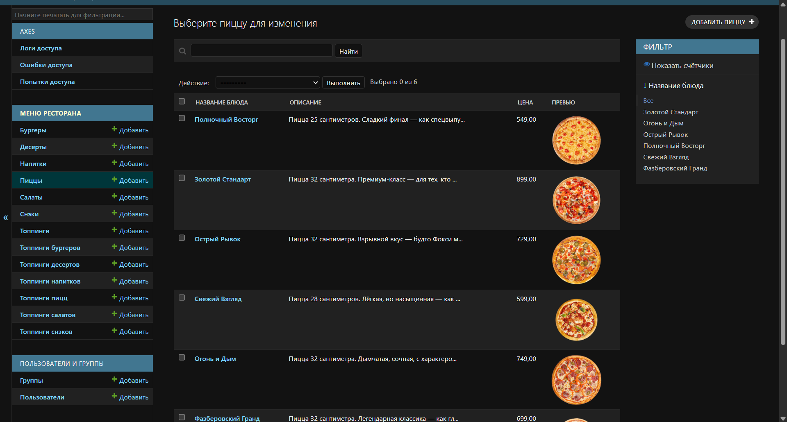
🍽️ Редактирование меню в админкеПроект использует стратегию development → main:
в ветке development ведется активная разработка с
полными комментариями, а main содержит оптимизированные
продакшен-сборки.